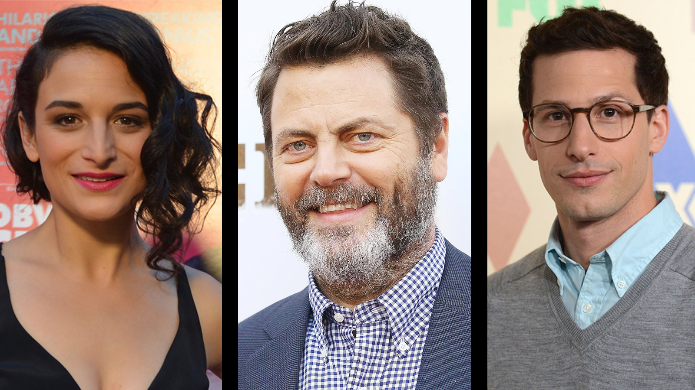

November 30, 2020 // Tags: Mixed || B99 || Parks || List
Parks of the Nine Nine
Pawnee, Indiana or Brooklyn, New York? Here are six actors that appear in both shows!
Nick Offerman
The iconic Ron Swanson also happens to be Captain's Holt ex-boyfriend! Coincidentally, Holt and Frederick broke up over the latter's antique wooden duck, and Ron can be seen carving a wooden duck in an episode of Parks and Recreation
Andy Samberg
Arguably the best detective in the NYPD also happens to be a very loud parks security guard in Parks and Recreation. Was Jake Peralta simply undercover in Pawnee as Carl Lorthner? Is that why Doug Judy calls Jake Mangy Carl? Only Schur knows.
Jenny Slate
Mona Lisa Saperstein, who is literally the worst person in the world, exists in the B99 universe as Bianca, a mafia mistress. While the characters are from two completely different worlds (quite literally), they both, quite undeniably, have amazing hair.
Jim O'Heir
While Jerry/Larry/Terry/Gerry may have been a sweet, hard-working government employee who was simply trying his best, O'Heir plays a homophobic Florida sheriff in B99. Florida really brings the worst out in people.
Jason Mantzoukas
Adrian Pimento, the detective who may be one of the scariest dudes alive while seriously needing therapy and a hug, finds his counterpart in Dennis Feinstein, a fragrance mogul who may or may not hunt humans for sport.

Fred Armisen
Armisen plays Raul, the condescending Venezuelan officer who visits Pawnee, and also Mlep(clay)nos (the clay is silent), arguably the best character and violin/guitar player in B99.